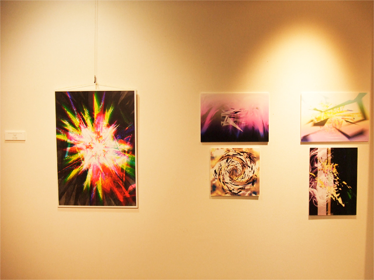

まず先述した「主体性がぼやけてしまっている」について考えてみよう。
まず先述した「主体性がぼやけてしまっている」について考えてみよう。
皆様は「メディア」というものが生まれてどれくらい経つと思っているだろうか。
多くの人はテレビ、もしくは新聞といった我々がいつも目にするものを想起するかもしれない。
しかし歴史を振り返ればアルミタラ洞窟壁画が歴史上初めてのメディアとして捉えることができる。
壁画は一つの「絵」という見方ができるが、同時に絵を残し「情報」という伝達手段で残し
メッセージを伝えるという部分でメディアの要素を含んでいると考えられる。
メディアの変成は時代が進むにつれ、より一層情報分散はその広がりを見せる。
一対一から、大人数に、自治、国、そして世界へと情報の分散はその規模を広げる。
そんな情報伝達の手段としてのメディアが世界単位に広がるようになった起因は
インターネットが一般流通したことにも関連すると思われる。
すぐどこにでも情報が広げられる環境になったことで、
我々は距離、国境というものを容易く超えることができるようになった。
しかし情報の流通が簡易的に広範囲になったことは必ずしもよいことではない。
それは受け取るべき情報量が個人に対して圧倒的なものとなり、
明確な情報がつかめなくなってしまっていることである。
他にも選別され抽出化されたり透明度がある情報が出回ることで情報に齟齬が発生する。
得られるものは皆等しいわけではないが、ある種の統一感により
どこか明確ではない齟齬のあるもので統一されてしまい、納得してしまっている。
このメディアにより情報統制された中で
我々はいったい何に対して感情をもち、どのように自分の意見を持てるのだろうか。
私はその部分において現代社会における
「主体性がぼやけてしまっている」ことを示唆したい。

今回の展示作品の主たるテーマにそれを設定したところがある。
デジタルアブストラクトシリーズはあくまでも「イメージ」として設定した部分があり
それ自体に意味があるわけではなく、そのイメージから各人が考えうるイメージを
それぞれで持ってもらいたいという想起を促す作品となっている。
現代アートの要素に含まれる制度批判やレトリック（作品解釈）の部分を強調したところもある。
展覧会開催中、私と観覧者との会話の中で
「この作品には何の意味があるのか」という質問をされたことがある。
普通であれば、その作品に込められた意味を答えるところではあるが、そうはしなかった。
あくまでも、自分が感じたもの、見て何が想起されたのかという部分に注目してほしい。
そうしたことを強調して、説明しただけにすぎなかった。
ぼやかされた主体性の中で明確な意味を与えてしまうことは
そこからある一定の価値観だけしか生成されなくなってしまうかもしれない。
それは先述した「メディアによる統制」に近いものがあり、その二の舞にしかなれない。
得られる情報は一定であり、そこから自分自身で分化させてゆく。
そこは統率の取れないカオス化した空間というわけではなく、
自分自身の主体性をはっきりとさせ、コミュニティに自己を同化させてしまう
堂々巡りからの脱却を今回の再起動展を通じてねらっていたのである。